8 fotos utilizadas em TREINO, sem identidades de validação. Máscara-oráculo gerada com teacher: não disponível em inferência. Seu mapa abrange também cabelo/elementos desalinhados. O oráculo com pixels do teacher é apenas limite superior; a rede não prevê esses pixels.
O teste compara preservar nitidez com máscara e reproduzir delineado. Veja olhos, cabelo e lábios; clique na imagem para zoom.
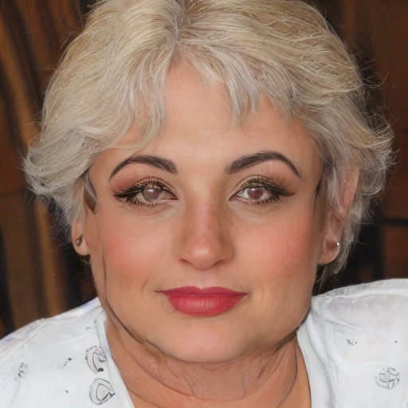
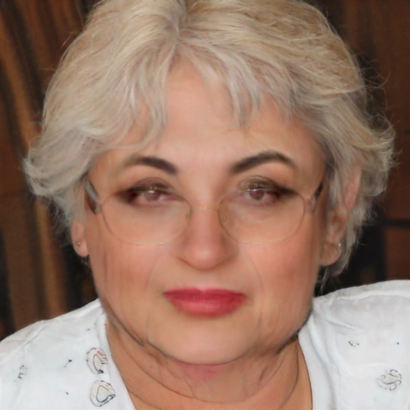
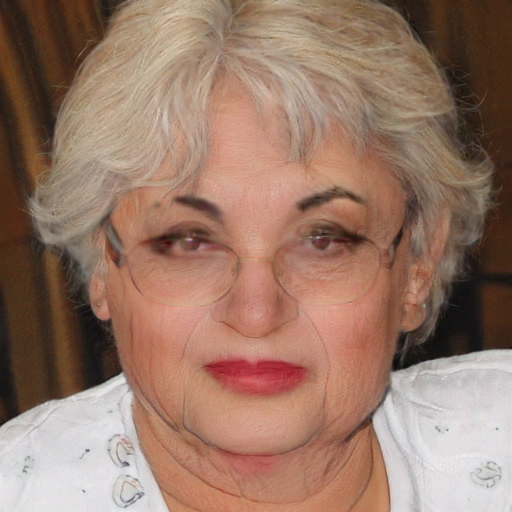
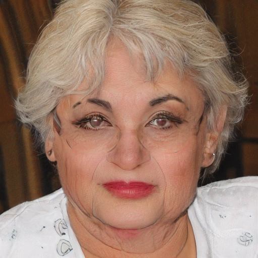
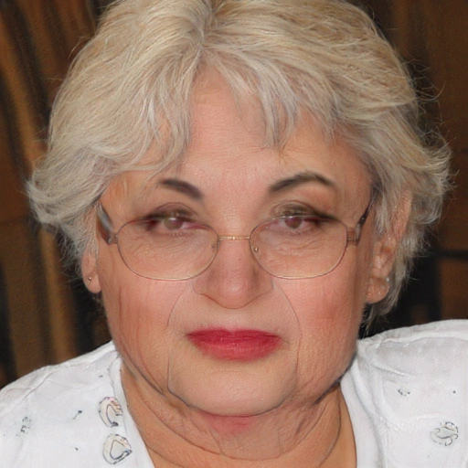
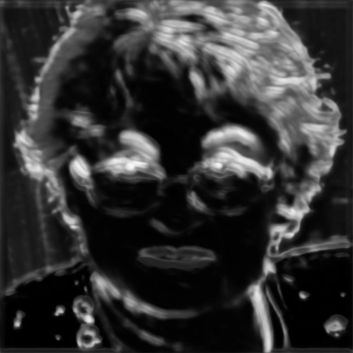
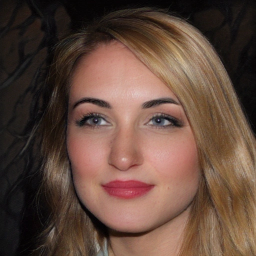
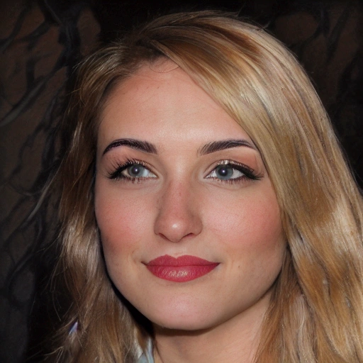
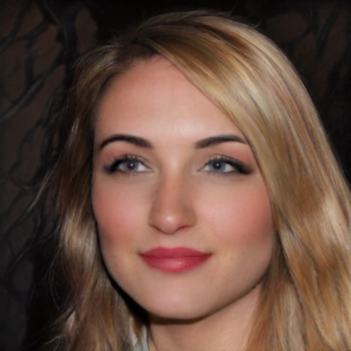
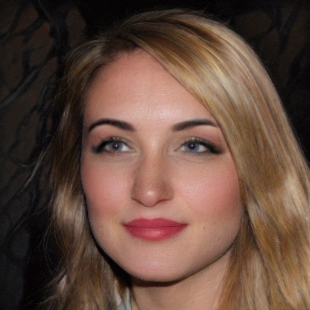
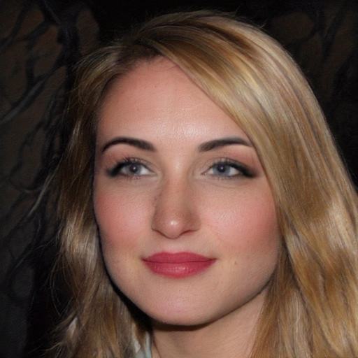
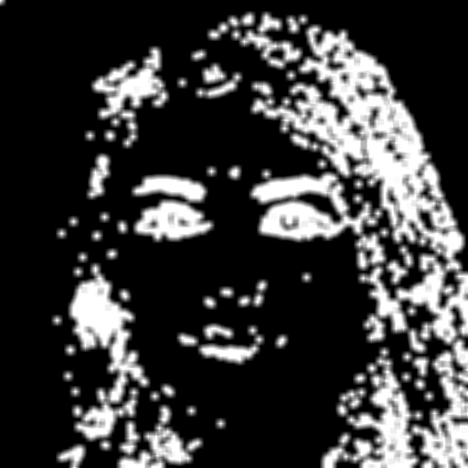
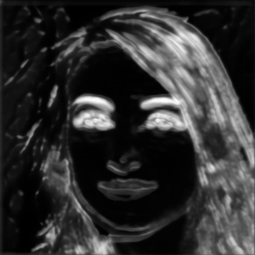
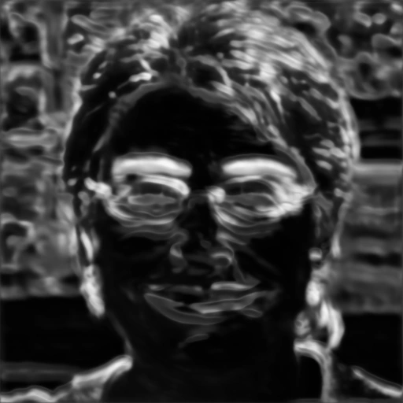
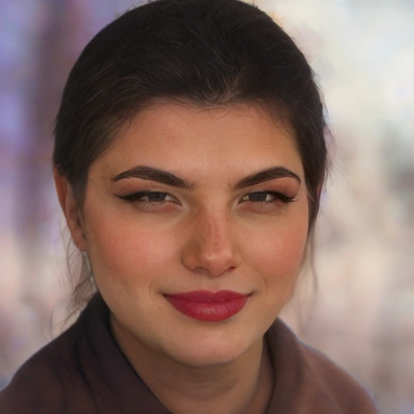
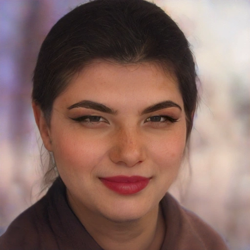
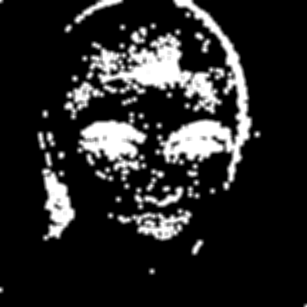
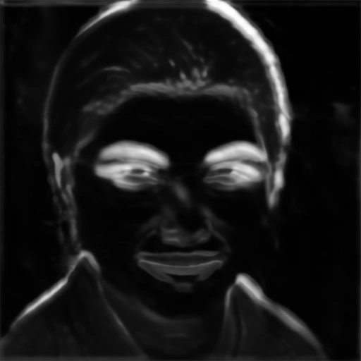
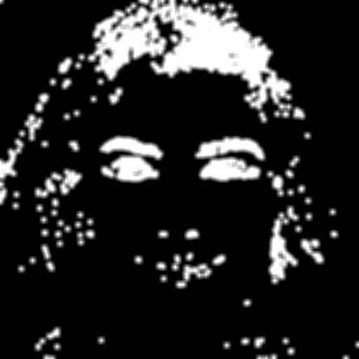
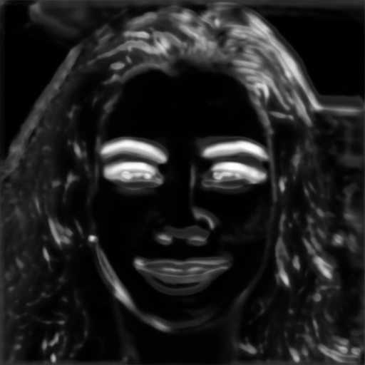
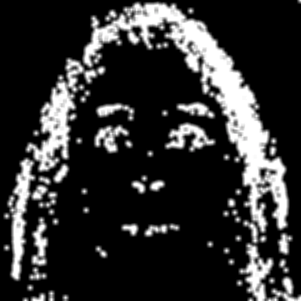
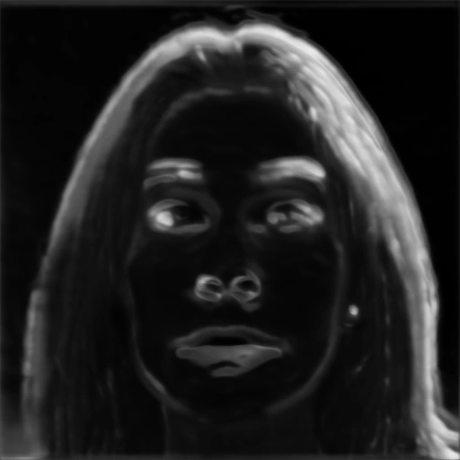
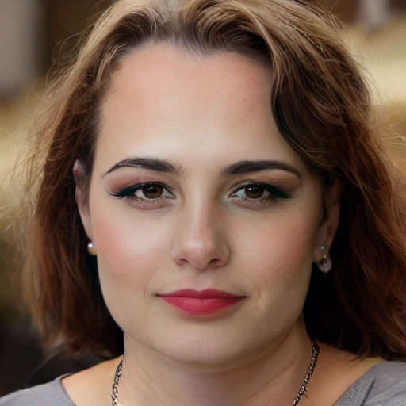
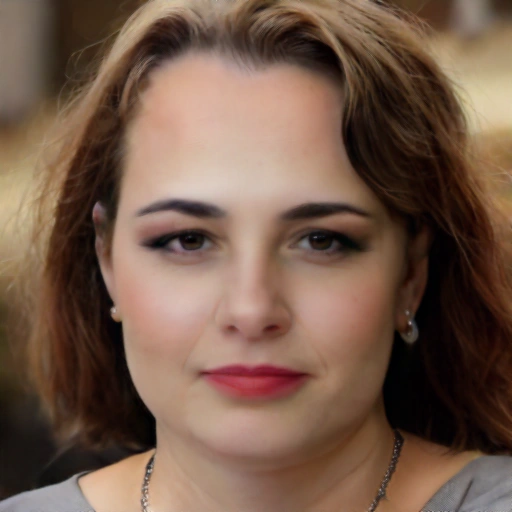
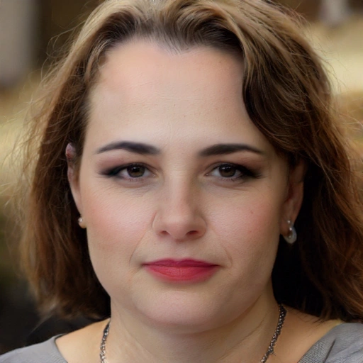
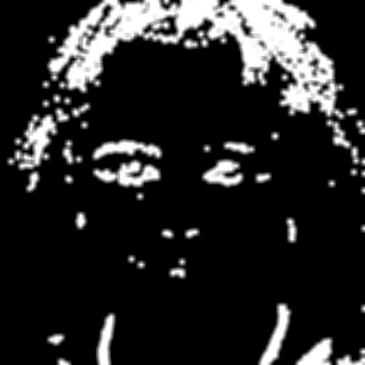
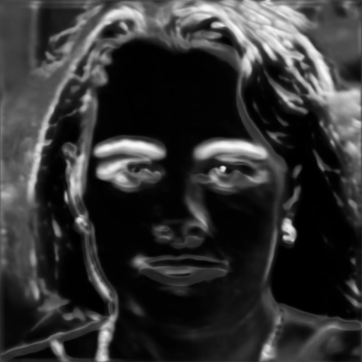
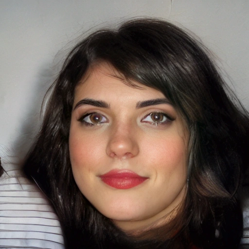
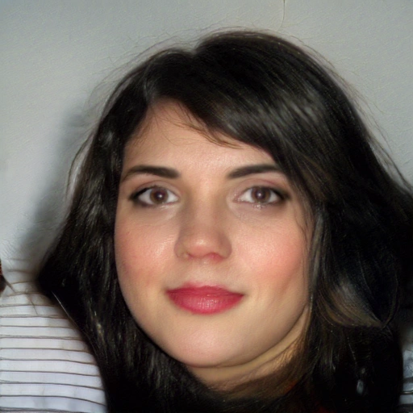
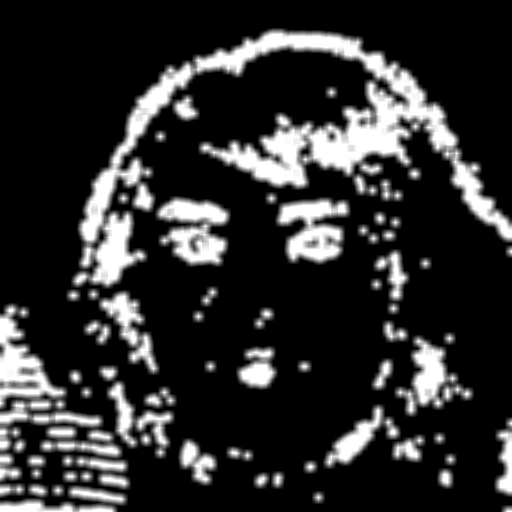
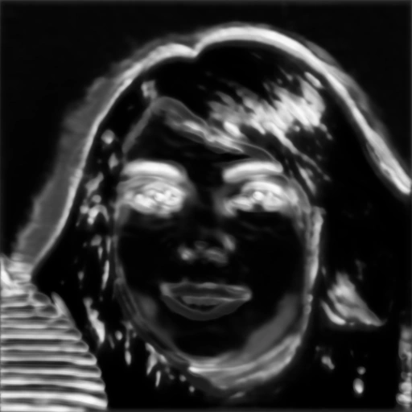